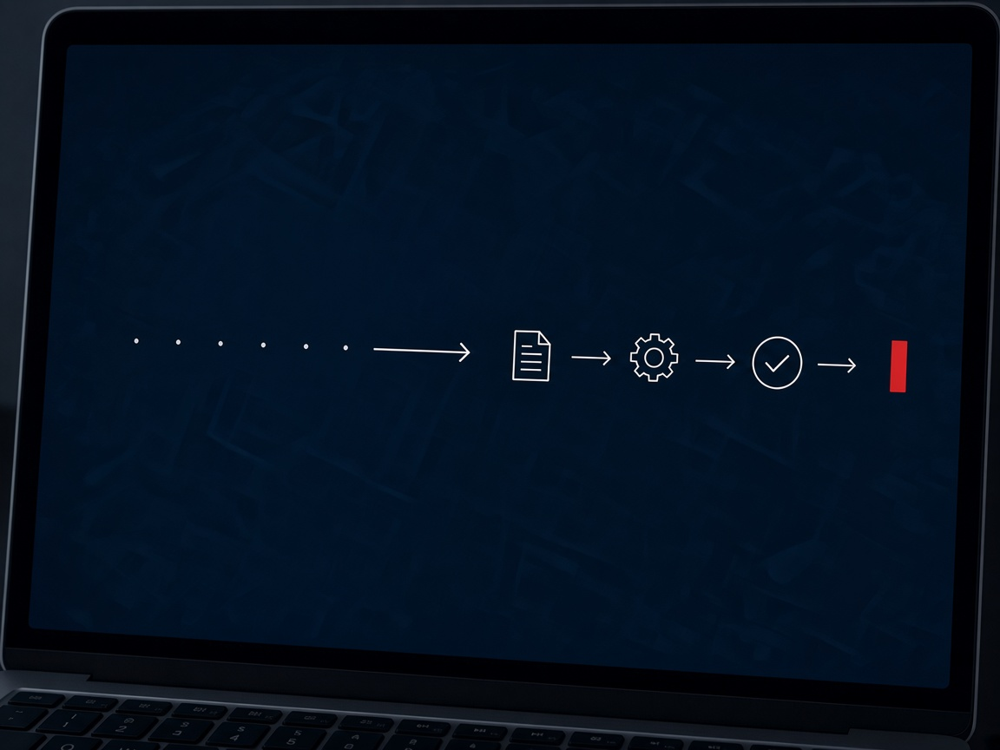
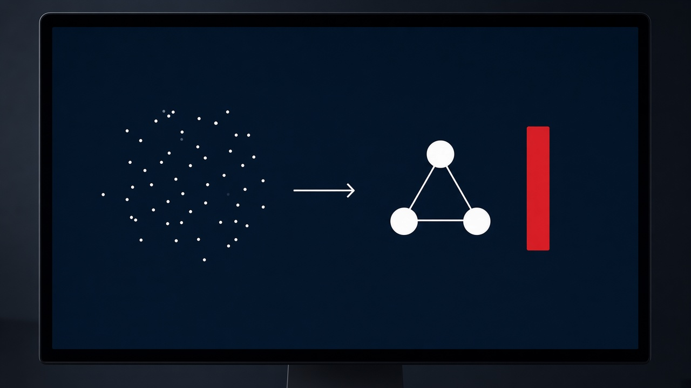

Para quem
Diretoria, TI e operação.
ManausGestãoTecnologia
Consultoria em tecnologia da informação
A J2R2 conduz governança de TI, portfólio de projetos, implantação de sistemas e melhoria de processos para serviços, indústria e comércio. Em Manaus e, no remoto, em todo o Brasil.

Diretoria, TI e operação.
Manaus, com trabalho remoto no Brasil.
Jairo Alves dos Santos, mais de 30 anos em tecnologia e gestão.
Condução do trabalho. Sem fábrica de software.
01 — Contexto
Não é falta de ferramenta. É decisão sem critério, projeto sem dono e rotina que só uma pessoa consegue explicar.
O fornecedor anda, a área de negócio espera e a TI apaga incêndio. Ninguém vê o corte se aproximar.
O orçamento existe, o risco também. A reunião mensal ainda discute chamado, não prioridade.
A rotina atravessa áreas e depende de herói. Quando essa pessoa sai, o conhecimento sai junto.
A cobrança chegou antes da pergunta: qual decisão ou qual rotina vai melhorar, e como saber se valeu.
02 — Serviços
Cada frente tem escopo combinado com a empresa. O detalhe de quando usar e o que fica depois da consultoria está na página de serviços.

03 — Método
O tamanho muda conforme o problema. A sequência, não.
Contexto, quem decide e o que está doendo. Sem proposta no escuro.
TI, projetos e processos o suficiente para nomear o problema certo.
Escopo, prioridades, indicadores e o que fica de fora, por escrito.
Trabalho com a equipe e com os fornecedores. Desvio tratado cedo.
Donos, indicadores e o próximo ciclo ficam na empresa.
04 — Limite
Dizer não no começo evita contrato que promete uma coisa e entrega outra.
A J2R2 não opera fábrica de software nem escreve o sistema no lugar do fornecedor.
Não há catálogo de equipamento, hora técnica de help desk nem licença de terceiros.
Não há projeto sem dono, prazo e indicador que a diretoria consiga ler.

Quem conduz
Mais de 30 anos entre sistemas industriais, centro de serviços, gestão de TI e sala de aula em Manaus. O trabalho da J2R2 é pessoal: quem contrata fala com quem conduz.
Próximo passo
Sem pacote fechado. Se fizer sentido, a J2R2 devolve um escopo, um prazo e um jeito de acompanhar.